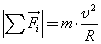
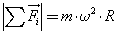

Задача №1
Условие задачи
Два пловца должны попасть из точки А на одном берегу реки в прямо противоположную точку В на другом берегу. Для этого один из них решил переплыть реку по прямой АВ, другой же — все время держать курс перпендикулярно к течению, а расстояние, на которое его снесет, пройти пешком по берегу со скоростью u. При каком значении u оба пловца достигнут точки В за одинаковое время, если скорость течения v0= 2,0 км/ч и скорость каждого пловца относительно воды v' = 2,5 км/ч?
Задача №2
Условие задачи
От бакена, который находится на середине широкой реки, отошли две лодки, А и В. Обе лодки стали двигаться по взаимно перпендикулярным прямым: лодка А — вдоль реки, а лодка В — поперек. Удалившись на одинаковое расстояние от бакена, лодки вернулись затем обратно. Найти отношение времен движения лодок τА/τB, если скорость каждой лодки относительно воды в η=1,2 раза больше скорости течения.
Задача №3
Условие задачи
п°-мезон (mo = 2,4*10-28 кг) движется со скоростью V = 0,8 с = 2,4*108 м/с. Чему равна его кинетическая энергия? Полученный ответ сравните с вычислениями по классической механике.
Задача №4
Условие задачи
Задачи на динамику движения материальной точки по окружности с равномерным движением точки по окружности решают только на основании законов Ньютона и формул кинематики с тем же порядком действий, о котором говорилось в пп. 1-7, но только уравнение второго закона динамики здесь нужно записывать в форме:
|
 |
или |
 |
Задача №5
Условие задачи

Какой физический смысл имеет точка пересечения графиков II и III на рис.1? Какой из графиков соответствует движению с большей скоростью? Можно ли по этим графикам определить траектории движения?